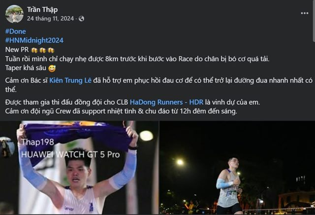
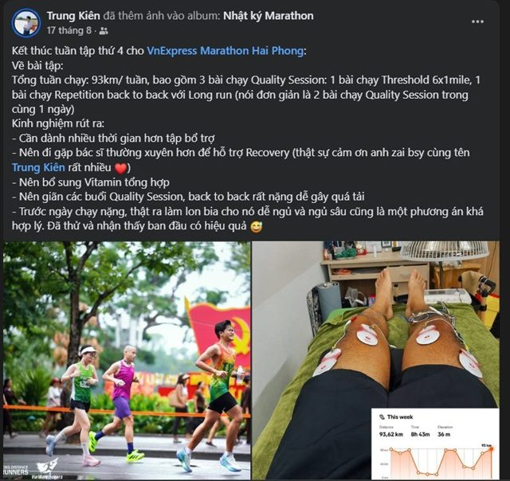

Thăm khám & điều trị
Châm cứu, vật lý trị liệu cho đau cơ xương khớp & chấn thương thể thao
Mình theo đuổi định hướng điều trị kết hợp giữa Y học cổ truyền và Y học hiện đại, tập trung vào các bệnh lý cơ xương khớp, phục hồi chức năng và chấn thương thể thao. Mục tiêu không chỉ là giảm triệu chứng đau mà còn phục hồi vận động, cải thiện chức năng và giúp người bệnh sớm trở lại sinh hoạt, lao động hoặc tập luyện thể thao.

Điểm khác biệt
Kết hợp cổ truyền & hiện đại
Mình áp dụng cách tiếp cận kết hợp giữa Y học cổ truyền và kiến thức y học thể thao hiện đại, giúp đánh giá toàn diện nguyên nhân gây đau và xây dựng kế hoạch điều trị phù hợp cho từng người bệnh.
Triết lý điều trị của mình là hướng tới phục hồi chức năng bền vững, giảm phụ thuộc thuốc, kết hợp các kỹ thuật Y học cổ truyền có bằng chứng với vận động trị liệu và thay đổi lối sống phù hợp.
Chuyên môn
Lĩnh vực tập trung
Y học cổ truyền
- Châm cứu, điện châm, thủy châm
- Cứu ngải, giác hơi, xoa bóp bấm huyệt
- Điều trị bằng thuốc Y học cổ truyền
- Kết hợp các phương pháp không dùng thuốc trong quản lý đau và phục hồi chức năng
Cơ xương khớp – PHCN
- Đau cổ vai gáy
- Đau thắt lưng, thoát vị đĩa đệm
- Đau thần kinh tọa
- Thoái hóa cột sống, thoái hóa khớp
- Viêm quanh khớp vai
- Đau cơ, đau cân cơ do quá tải vận động
Y học thể thao
- Bong gân cổ chân
- Chấn thương phần mềm
- Viêm gân Achilles
- Đau gối ở người chạy bộ
- Hội chứng đau dải chậu chày (IT Band Syndrome)
- Đau cẳng chân do chạy bộ (Shin Splints)
- Các chấn thương do tập luyện và thi đấu thể thao phong trào
Ca lâm sàng
Kết quả điều trị thực tế

Liệt VII ngoại biên sau phẫu thuật u não
Hình ảnh trước và sau một liệu trình điều trị phục hồi (11/08/2025 → 03/09/2025), được chia sẻ với sự đồng ý của bệnh nhân.
Phản hồi từ người bệnh



